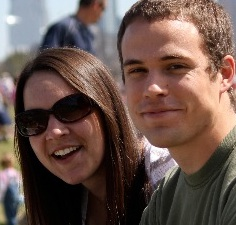
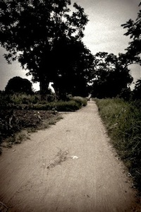

let us not love with words or tongue, but with actions in truth
We are joining an organization called the Seed Effect this summer on an expedition to South Sudan. We will be working with their micro-finance organization to get a first-hand glimpse into the front lines of the fight against poverty. We believe that the most important part in this fight against poverty is knowing that God will never abandon or forsake you, that God is there for you and that even in the midst of poverty there is hope in Jesus.
Microfinance enables people in the most poorest countries in the world to break the cycle of poverty -- so much so that the originator was awarded the Nobel Peace Prize in 2006 for his work in this area. It is a system that provides small (less than $500), collateral-free loans to income-generating businesses. The borrowers are firmly rooted in a support community that helps them repay their loan with remarkably low default rates. As loans are repaid, the money is re-invested into other loans.
The Seed Effect is an organization that uses micro-lending to not only combat poverty, but also promote community, accountability, education, stewardship, and Truth. Seed Effect operates through local citizens, so they are close to and understand the culture. Seed Effect is an E3 Partners Initiative
South Sudan has one of the weakest and most under-developed economies in the world with half the population below the poverty line. Its people have been rocked by brutal human rights violations and millions have been displaced. It recently declared independence, and is currently still suffering turmoil and land disputes with Sudan.
Each day we will partner with local believers to share the gospel in the community in exciting and creative ways. We will be helping either to start a brand new church, or strengthen an existing one. We will also be meeting with borrowers and empowering them with educational seminars and community development projects.

We are Aaron and Ashly Stacy. We're a computer engineer and school teacher living in Austin, Texas, and we feel incredibly blessed. We also feel called by God to share the reason for the hope we have, and we're fortunate enough to have the chance to see God work in the lives of others in a culture different from our own.
We can't do this alone. We need to raise $7,900 to fund the trip, and we're looking for people to partner with us. If you feel prayerfully lead to contribute financially, you may do so online or through the mail by .
Your prayers are even more important. If you can join us in prayer as we make this journey, please .
